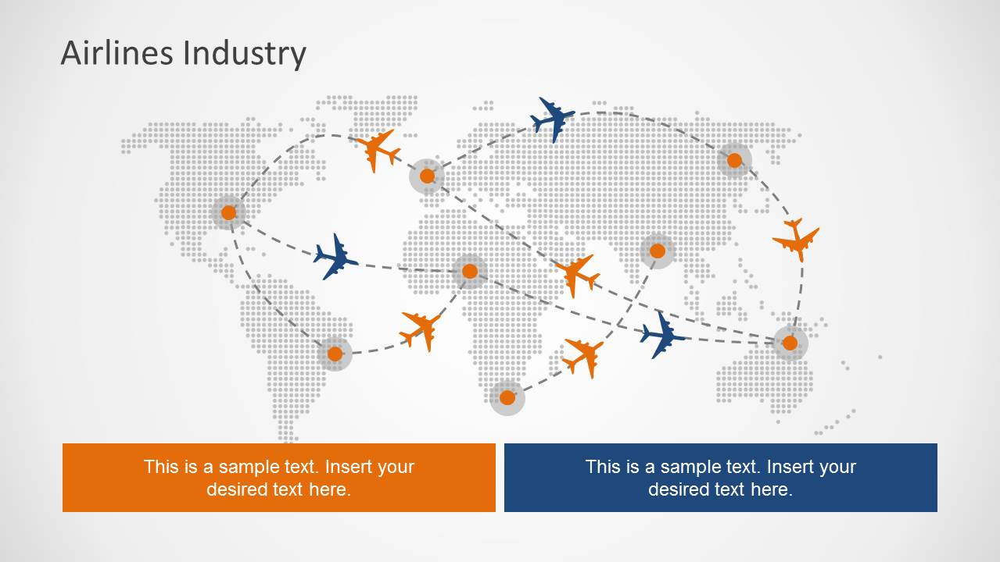
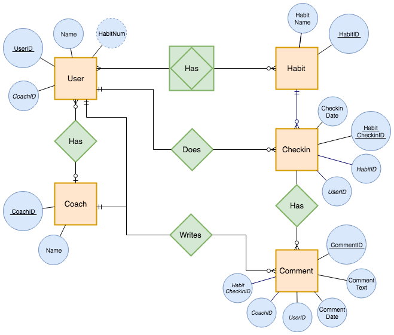

Force Diagrams
Force diagrams has the outstanding ability to show the relationship between things.
Transportation System
- Force diagrams are often used in the transportation systems to show how well the system connects different places
- The nodes usually are the places and the edges are the distances between places

Resource Link
Family Tree
- When we have a large scale of family member, force diagrams might be the best the choice to visualize the relations among the famliy members
- The nodes usually are the peoples and the edges connects your parents and children
Resource Link
Coding UML
- UML graph is another type of force diagram. It shows the relationship between the objects or the attributes
- The nodes for UML can be objects, methods, and attributes. The edges always tells us what's the relation between things

Resource Link